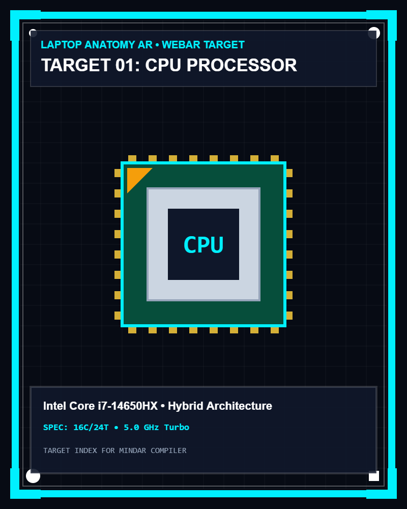
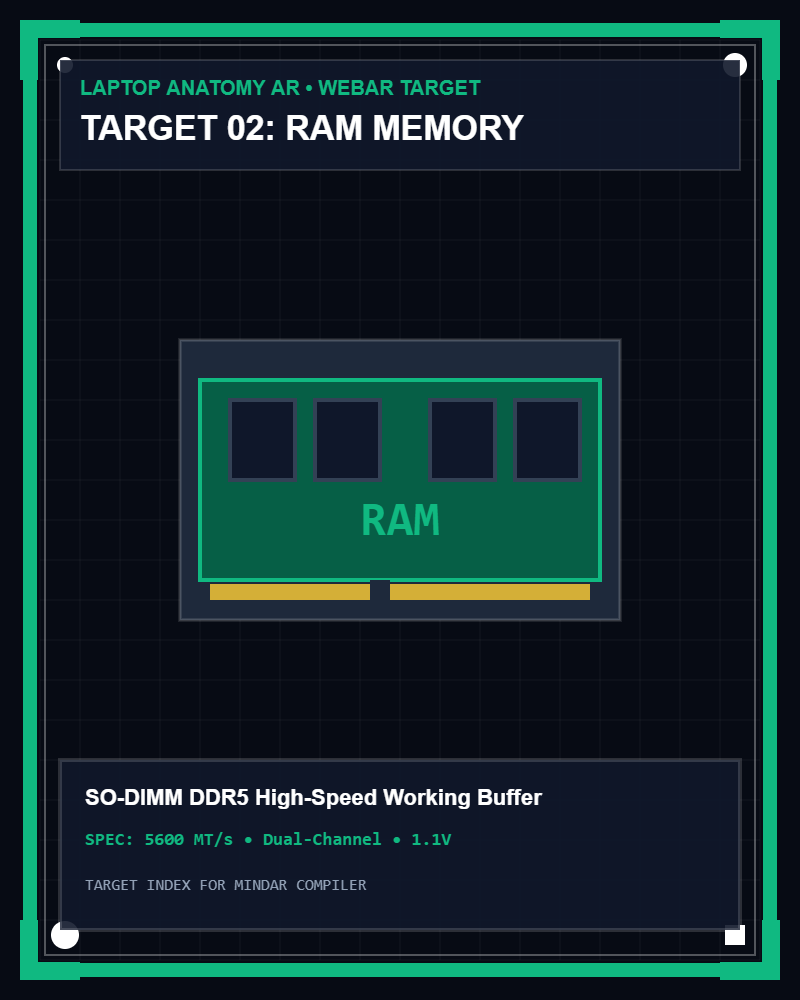
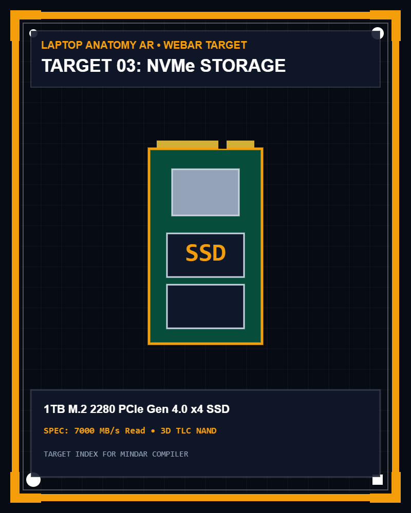

Laptop Anatomy Education

MODUL 02 • EDUKASI AUGMENTED REALITY (MINDAR)
Studio Pemindaian
Komponen Perangkat Keras
Pindai kartu marker CPU, RAM, dan SSD menggunakan kamera perangkat untuk menampilkan model tiga dimensi interaktif. Mendukung pengaturan skala objek (0.25x–2.5x), rotasi 360 derajat, serta pembacaan materi melalui narasi suara Bahasa Indonesia.
Pilih Sasaran Marker Untuk Memindai:


